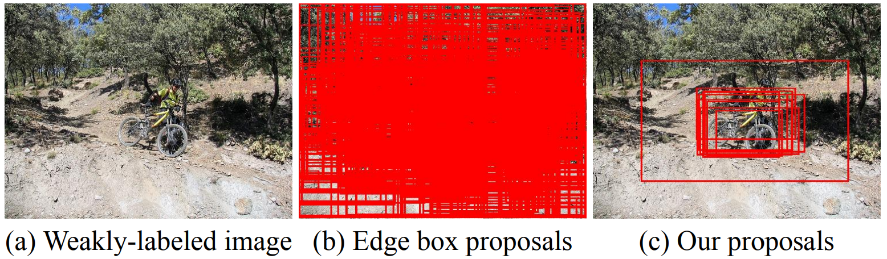

You reap what you sow: Using Videos to Generate High Precision Object Proposals for Weakly-supervised Object Detection

Given a weakly-labeled image (a), standard weaklysupervised object detection methods start by generating hundreds to thousands of object proposals (b). The ensuing object localizer must then perform the extremely difficult task of mining the one or two relevant object regions out of all the noisy proposals. We instead generate a few high-precision proposals (c), using a weaklysupervised region proposal network (W-RPN) trained without any bounding box annotations.
People
Abstract
We propose a novel way of using videos to obtain high precision object proposals for weakly-supervised object detection. Existing weakly-supervised detection approaches use off-the-shelf proposal methods like edge boxes or selective search to obtain candidate boxes. These methods provide high recall but at the expense of thousands of noisy proposals. Thus, the entire burden of finding the few relevant object regions is left to the ensuing object mining step. To mitigate this issue, we focus instead on improving the precision of the initial candidate object proposals. Since we cannot rely on localization annotations, we turn to video and leverage motion cues to automatically estimate the extent of objects to train a Weakly-supervised Region Proposal Network (W-RPN). We use the W-RPN to generate high precision object proposals, which are in turn used to re-rank high recall proposals like edge boxes or selective search according to their spatial overlap. Our W-RPN proposals lead to significant improvement in performance for state-of-the-art weakly-supervised object detection approaches on PASCAL VOC 2007 and 2012.
Paper
|
|
Additional Materials
Approach
(a) Framework for training a weakly-supervised region proposal network (W-RPN) using videos. Given frames from a video (Vm), we first compute segments using motion cues, and then rescore them according to an automatic measure of segment quality. High scoring motion segments are used to compute pseudo ground-truth boxes to train the W-RPN. (b) Once trained, the W-RPN can be used to generate high precision proposals (O) for an input weakly-labeled image (In). These high precision proposals are used to rank the high recall proposals of edge boxes or selective search (R) according to their spatial overlap during the training of a weakly-supervised object detector.
Qualitative Results
Visualization of our and edge boxes top-10 proposals. Red boxes denote the proposal. Out proposals (d) localize the object tightly more often than the highest scoring edge box proposals (c). Our proposals are used to rank the edge boxes proposals (b).
Detection results of WSDDN with (green box) and without (red box) our proposals. Our proposals often lead to better detections as the network learns to detect the whole object rather than focusing only on a discriminative part or co-occurring context. In these examples, by using our proposals, WSDDN is able to detect the full extent of cat, dog, and person whereas it only focuses on their faces without our proposals.
Acknowledgments
This work was supported in part by NSF CAREER IIS-1751206, IIS-1748387, AWS ML Research Award, Google Cloud Platform research credits program, and GPUs donated by NVIDIA.
Comments, questions to Krishna Kumar Singh